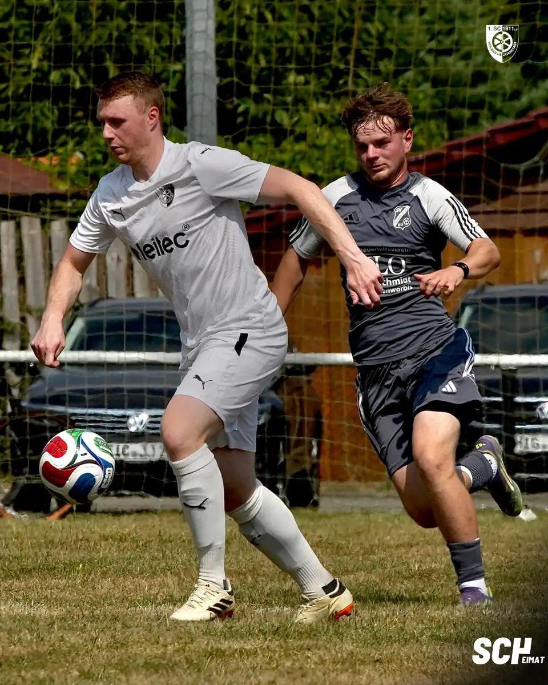
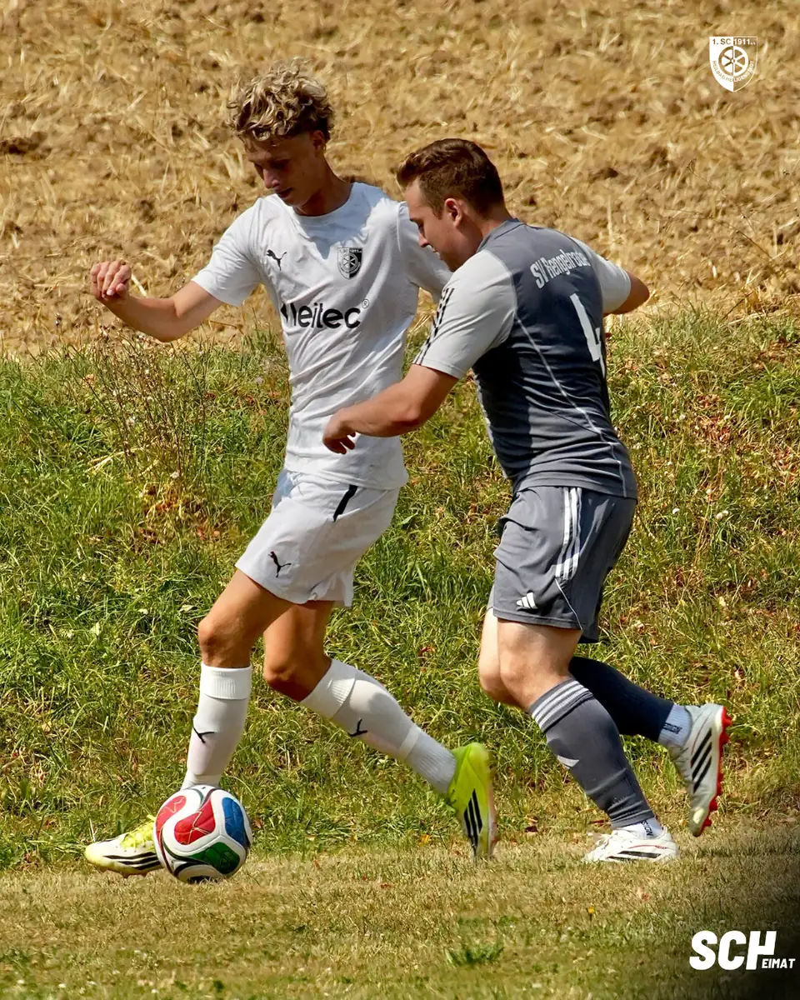
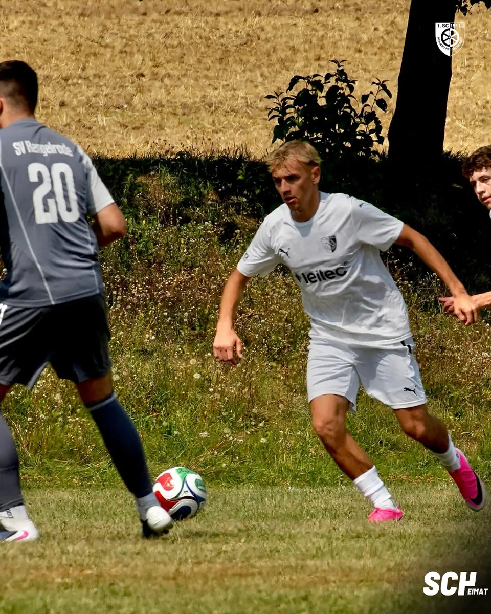
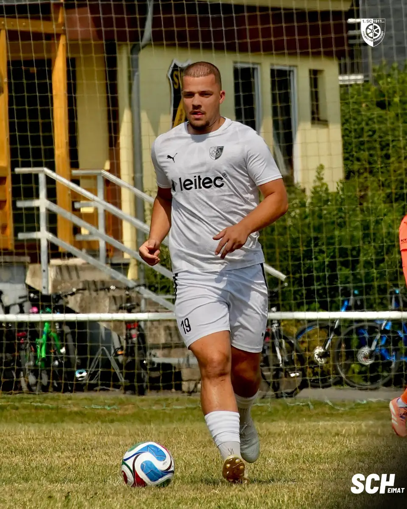
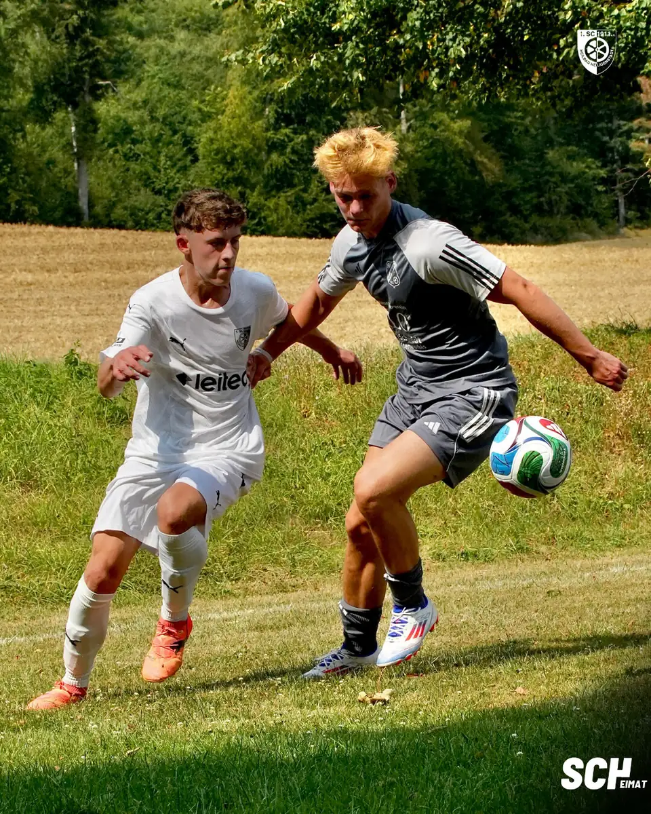
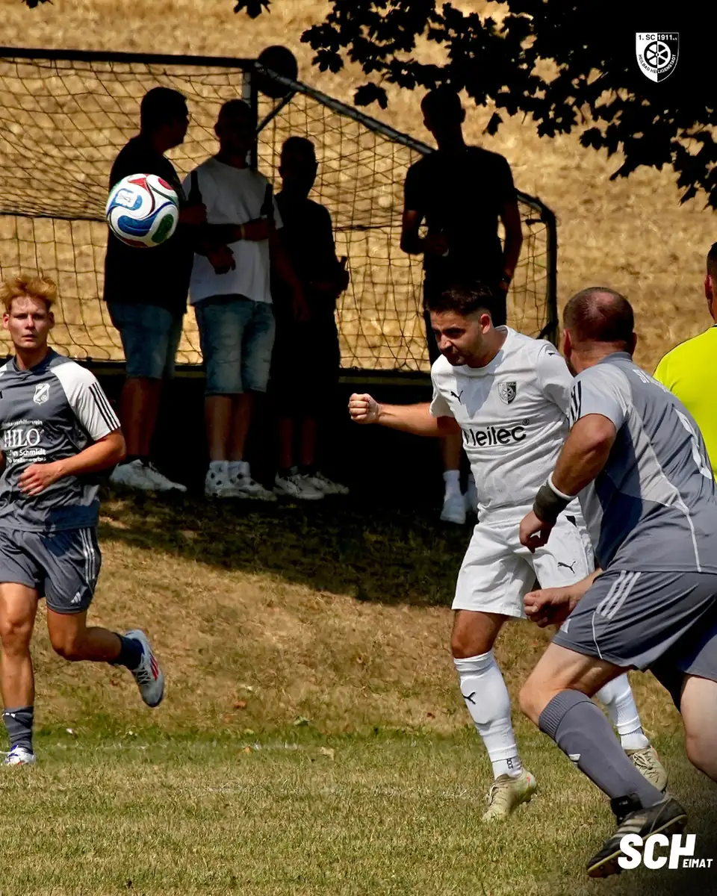
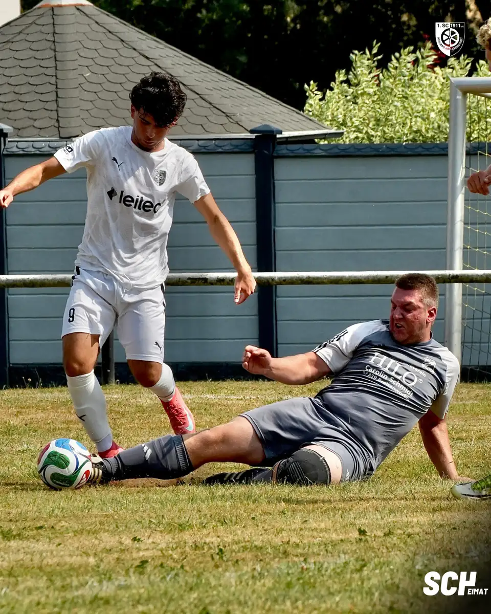
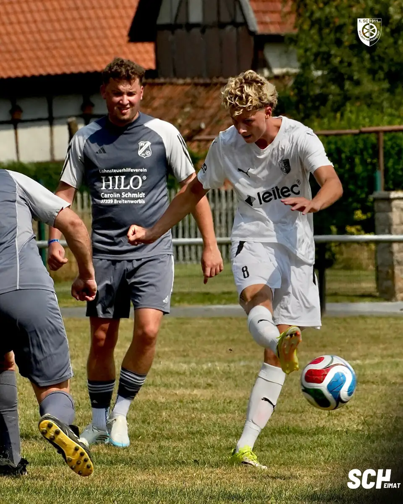
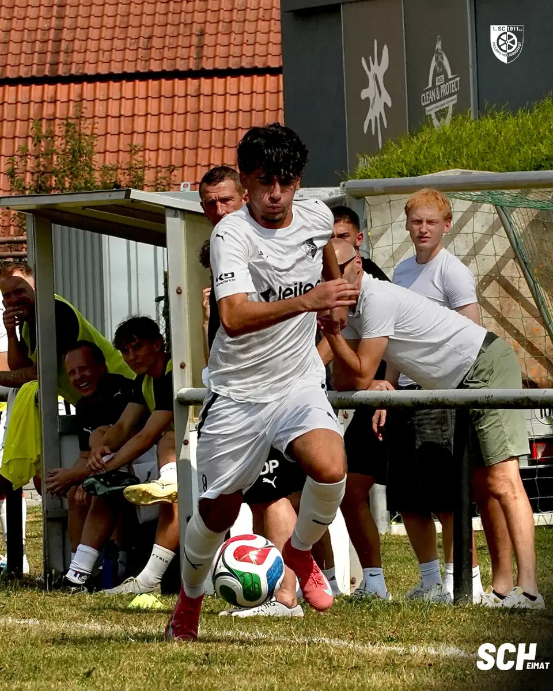

Souverän in Runde zwei: Papst-Elf löst Pokalaufgabe in Rengelrode
Mit einem klaren Auswärtssieg ist unsere zweite Mannschaft in die neue Pflichtspielsaison gestartet. Die Papst-Elf setzte sich am Sonntagnachmittag in der ersten Runde des Kreispokals mit 7:0 (4:0) beim SV 1911 Rengelrode durch und zog damit souverän in die zweite Runde ein. Über die gesamten 90 Minuten waren die Blau-Weißen die klar bessere Mannschaft und ließen beim unterklassigen Gastgeber keine Zweifel am Weiterkommen aufkommen. Für den Kreisoberligisten war es nach der langen Sommervorbereitung der erste Auftritt, bei dem wieder das Ergebnis zählte. Entsprechend konzentriert ging die Mannschaft von Trainer Daniel Papst die Partie an.
Frühe Tore sorgen für klare Verhältnisse
Gerade einmal vier Minuten waren gespielt, da setzte der SCH das erste Zeichen. Thomas Kahlmeyer traf zum 1:0 und brachte die Papst-Elf damit schnell auf Kurs. Der Angreifer hatte bereits in der vergangenen Kreisoberliga-Saison regelmäßig seine Torgefahr unter Beweis gestellt und eröffnete nun auch im ersten Pflichtspiel der neuen Spielzeit den Torreigen.
Der SCH blieb anschließend die spielbestimmende Mannschaft. Die Blau-Weißen kontrollierten die Partie, hielten den Druck hoch und ließen Rengelrode kaum Gelegenheit, selbst Einfluss auf das Geschehen zu nehmen. In der 15. Minute folgte bereits der zweite Treffer. Steven Schäfer erhöhte auf 2:0 und sorgte damit früh für klare Verhältnisse. Der SV 1911 Rengelrode hielt dagegen, konnte den Kreisoberligisten an diesem Nachmittag aber nur selten aus seinem Rhythmus bringen.
Jargees Ali schnürt den Doppelpack
Kurz vor der Pause machten die Blau-Weißen innerhalb weniger Minuten aus einer komfortablen Führung eine deutliche Angelegenheit. In der 40. Minute bekam der SCH einen Foulelfmeter zugesprochen. Jagar Jargees Ali übernahm die Verantwortung und verwandelte zum 3:0. Der junge Angreifer brauchte anschließend nur drei weitere Minuten für seinen zweiten Treffer. In der 43. Minute erhöhte Jargees Ali auf 4:0 und sorgte damit schon vor dem Halbzeitpfiff für klare Verhältnisse. Mit dieser Führung ging es in die Kabinen. Die Papst-Elf hatte ihre Favoritenrolle bis dahin konsequent angenommen. Vier Tore, klare Spielkontrolle und ein Gegner, dem kaum Möglichkeiten gelassen wurden – der erste Durchgang verlief ganz nach dem Geschmack der Blau-Weißen. Vor allem die Konzentration stimmte.
Auch nach der Pause bleibt der SCH konsequent
Wer nach dem Seitenwechsel damit gerechnet hatte, dass die Papst-Elf angesichts des deutlichen Vorsprungs einen Gang zurückschalten würde, sah sich schnell eines Besseren belehrt.
Nur neun Minuten nach Wiederanpfiff fiel das 5:0. Erneut zeigte der Schiedsrichter auf den Punkt. Diesmal trat Paul Opfermann an und verwandelte den zweiten Foulelfmeter des Nachmittags sicher. Die Begegnung war damit endgültig entschieden. Trotzdem spielte die Papst-Elf weiter nach vorne und blieb das klar bessere Team. In der 66. Minute trug sich auch Alexander Rohner in die Torschützenliste ein.
Rasho setzt den Schlusspunkt
Auch in der Schlussphase blieb die Papst-Elf konsequent. Die Partie war längst entschieden, doch die Blau-Weißen spielten ihren Auftritt konzentriert zu Ende.
Fünf Minuten vor Schluss fiel schließlich das siebte und letzte Tor des Nachmittags. Habash Rasho traf in der 85. Minute zum 7:0 und setzte damit den Schlusspunkt unter einen rundum gelungenen Pflichtspielauftakt. Wenig später war Schluss. Vor 99 Zuschauern durfte die Papst-Elf einen ungefährdeten Einzug in die zweite Pokalrunde feiern.
Ein Auftakt nach Maß
Die Rollenverteilung vor dem Spiel war klar, und die Papst-Elf wurde ihrer Favoritenrolle über die gesamten 90 Minuten gerecht. Die Mannschaft nahm die Partie konzentriert an, sorgte früh für klare Verhältnisse und ließ auch nach der Pause nicht nach. Für Trainer Daniel Papst und seine Mannschaft war dieser Pokalnachmittag damit vor allem eines: ein gelungener Abschluss der Vorbereitung und ein erfolgreicher Start in die neue Pflichtspielsaison.
Jetzt beginnt die Kreisoberliga-Saison
Schon am kommenden Sonntag, 23. August, steht für die Papst-Elf das erste Punktspiel der neuen Kreisoberliga-Saison auf dem Programm. Um 15:00 Uhr empfängt der SCH die SG VfB 26 Beberstedt.
Spieldaten
SV 1911 Rengelrode – 1. SC 1911 Heiligenstadt II 0:7 (0:4)
SV 1911 Rengelrode
C. Wehr – Schneider – Frost – Beckmann – Jung (60. Guenther) – Wolf (81. Grimm) – J. Wehr – Häger (72. Benseler) – Siebert – Kuhnke – Rodenstock
SC Heiligenstadt
Lerch – Kaufhold (56. Wibe) – Simon – Weilandt – Semper – Opfermann (63. Aschoff) – Jargees Ali (56. Rasho) – Schäfer (63. Rohner) – Kahlmeyer (63. Hanusch) – Köhler – Pingel
Schiedsrichter
Schlögl
Zuschauer
99
Tore
0:1 Kahlmeyer (4.), 0:2 Schäfer (15.), 0:3 Jargees Ali (40.FE), 0:4 Jargees Ali (43.), 0:5 Opfermann (54. FE), 0:6 Rohner (66.), 0:7 Rasho (85.)








